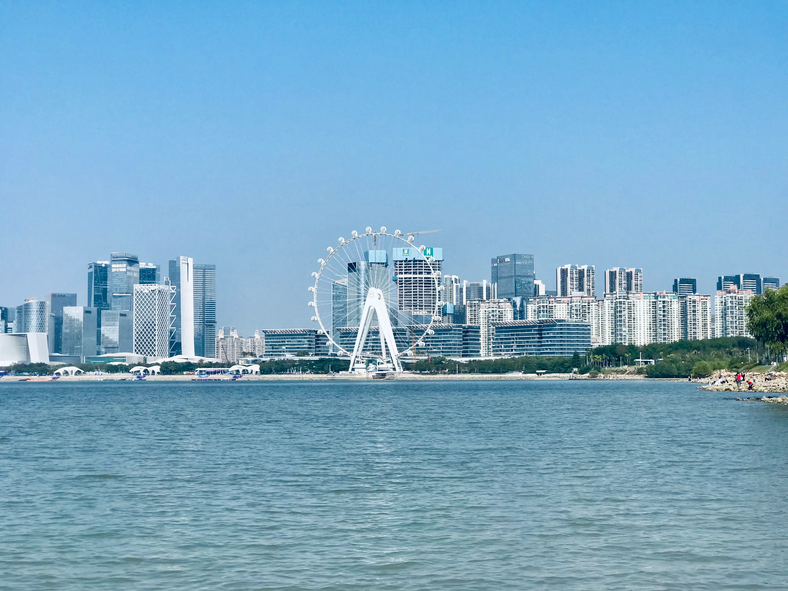
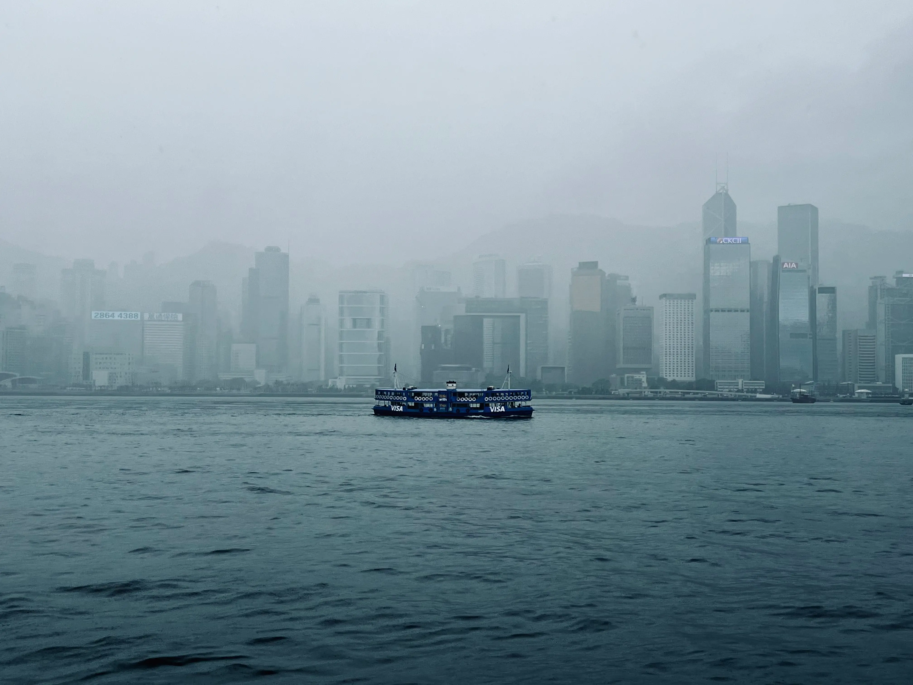
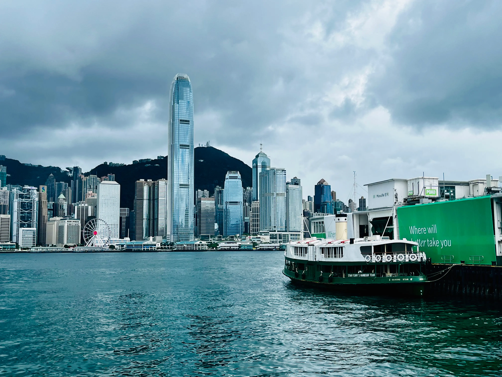
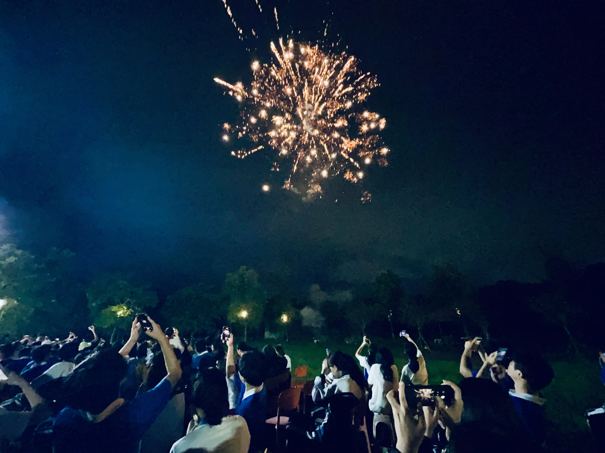
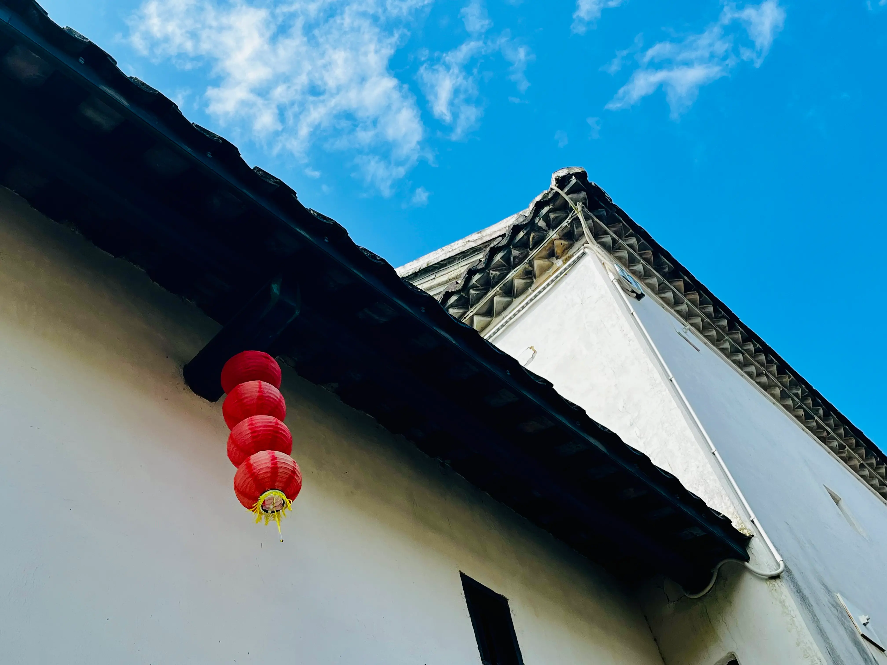
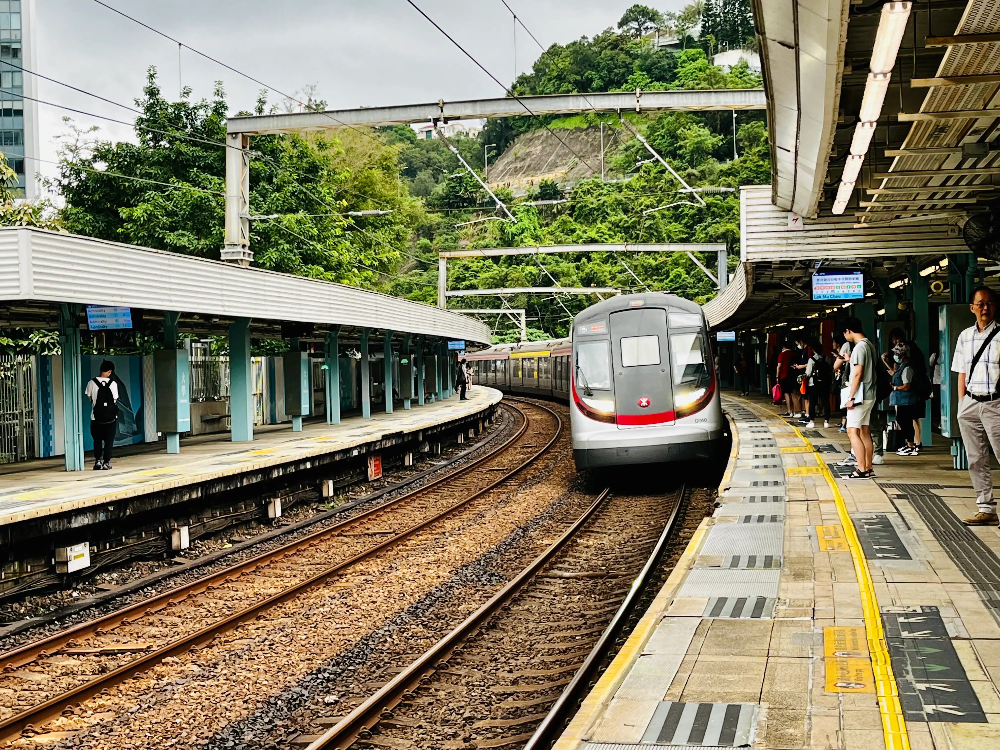
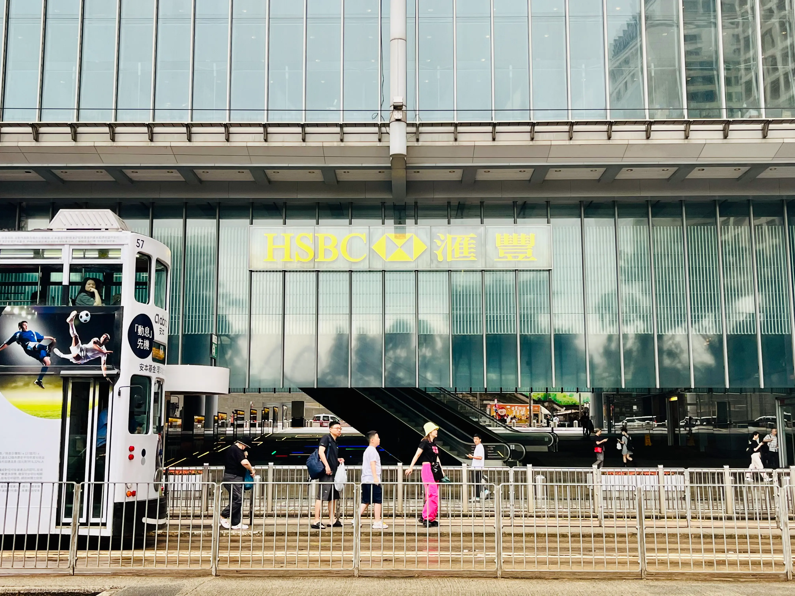

个人介绍
Andy Tao
可以叫我安迪，这是我的英文名。我出生于2006年，从小在深圳长大。现在正在学习计算机应用技术专业。
爱好摄影，听歌和旅游。喜欢听周杰伦和陶喆的歌，喜欢的城市是香港和上海。
🇨🇳🚹🏫💻📷🎵✈️🎤🍲🍔🥤️
「2025年」年度照片预计在2026年1月20日左右发布，敬请期待…
学习经历
广东新安职业技术学院信息工程学院-计算机应用技术专业
2025年9月 - 至今
深圳外国语学校致远高中-高中阶段
2022年9月 - 2025年6月
深圳市光明区实验学校-初中阶段
2019年9月 - 2022年6月
📷「2024年」年度照片 📷
除特殊说明外，所有照片均使用 iPhone 13 拍摄，由相关软件后期加工。

欢乐港湾
站在远处眺望欢乐港湾摩天轮。
*该张照片使用 iPhone 7 Plus 拍摄

小城夏天
大梅沙的沙滩和海浪就是夏天最直观的展现。

天星小轮
大雨笼罩维港，在海面上行驶的天星小轮。

维港海景
在香港的维多利亚港，停靠在岸边的天星小轮，一场大雨即将来袭。

夏日烟火
我认为这张是整个高中生活中最具有代表性的照片之一。

河源乡村
在宁静的乡村里采风。

进站转弯
那时的港铁东铁线大学站还未安装站台门，现在已全线安装。

汇丰总行
位于香港中环的汇丰银行总行，路过的人群和行驶的电车。
乡间风景
乡下的风景就是那么纯粹。
寒冬来临
随手拍下的一棵结了冰的树，那年冬天是真的冷。
所有照片均被压缩为WebP格式